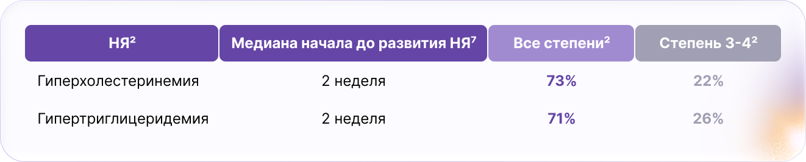
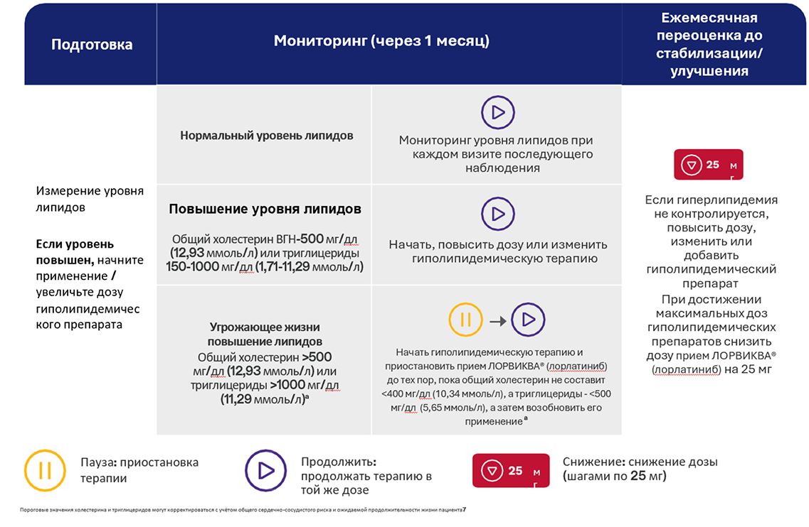

Управление терапией
Контроль НЯ с помощью 4 простых шагов7
Шаг 1
Подготовка
пациентов и ухаживающих лиц к тому, чего следует ожидать в процессе лечения препаратом ЛОРВИКВА®
Шаг 2
Мониторинг
НЯ, часто возникающих при применении препарата ЛОРВИКВА®, в начале терапии и при каждом визите в рамках наблюдения
Шаг 3
Контроль
вначале путем немедикаментозных подходов, затем приостановки терапии и, если потребуется, снижения дозы
Шаг 4
Повторная оценка
минимум один раз в месяц на предмет любых потенциальных и ожидаемых НЯ, а также необходимости коррекции дозы
Большинство НЯ можно эффективно контролировать при проактивном подходе к их ведению

Объясните пациентам и лицам, осуществляющим уход за ними, вероятность возникновения, сроки возникновения, симптомы и стратегии купирования возможных НЯ9

Поощряйте пациентов обращаться за помощью в наблюдении к лицам, осуществляющим за ними уход9

Чем раньше будут обнаружены НЯ, тем быстрее вы сможете вмешаться и помочь пациентам продолжать лечение (см. временную шкалу на соседней странице)9

Напомните пациентам, что прием более низкой дозы ЛОРВИКВА® — распространенный способ контролировать НЯ без снижения эффективности терапии6,9
ПРОАКТИВНОЕ УПРАВЛЕНИЕ НЕЖЕЛАТЕЛЬНЫМИ ЯВЛЕНИЯМИ МОЖЕТ ПОЗВОЛИТЬ ПАЦИЕНТАМ ДОЛЬШЕ ОСТАВАТЬСЯ НА ТЕРАПИИ2
Гиперлипидемия

Гиперлипидемия может контролироваться при помощи регулярного мониторинга и сопутствующей терапии7
в74%
случаев НЯ уменьшались или полностью разрешались при соответствующем ведении, включая применение гиполипидемических препаратов.

НЯ гиперлипидемии в большинстве случаев были 1–2 степени и, как правило, контролировались с помощью гиполипидемических препаратов2,6.
• Рекомендуется выбирать: розувастатин, питавастатин или правастатин7
• Следует избегать статинов, метаболизируемых через CYP3A46

Несмотря на более высокую частоту гиперлипидемии, частота сердечно‑сосудистых событий у пациентов с гиперлипидемией была ниже при применении ЛОРВИКВА® (лорлатиниб) по сравнению с кризотинибом (29% vs 50% при наблюдении 7 лет)2.

Во время разговора с пациентами:
• Объясните, что увеличение уровня холестерина или триглицеридов является
наиболее распространенным НЯ при приеме ЛОРВИКВА® (лорлатиниб), но они
эффективно снижаются с помощью гиполипидемических препаратов7
• Порекомендуйте пациентам обсудить со своими терапевтом, что они принимают
правильный препарат (розувастатин, питавастатин или правастатин)7
• Поскольку гиперлипидемия может не иметь клинических проявлений, пациенты и
лицам, осуществляющим уход за ними, должны понимать важность выполнения
своевременных анализов крови в соответствии с рекомендациями врача7
Тактика ведения пациентов с индуцированной ЛОРВИКВА® (лорлатиниб) гиперлипидемией7

Подходы к контролю гиперлипидемии
Немедикаментозные
Рекомендуйте пациентам соблюдать средиземноморской диеты10
медикаментозные

Выберите один из следующих статинов7,b:
Розувастатин
5–10 мг внутрь 1 раз в сутки для терапии средней интенсивности;
20–40 мг внутрь 1 раз в сутки для терапии высокой интенсивности.
Питавастатин
2 мг внутрь 1 раз в сутки
Правастатин
40 мг внутрь 1 раз в сутки
Добавьте эзетимиб, если гиперхолестеринемия сохраняется несмотря на проводимую терапию
Добавьте фибраты или рыбий жир, если уровень триглицеридов остается повышенным
Рассмотрите возможность направления пациента к кардиологу, если отмечается непереносимость статинов или отсутствие ответа на максимальные дозы гиполипидемической терапии7
Специалисты могут назначить ингибиторы PCSK9 или другие альтернативные гиполипидемические препараты